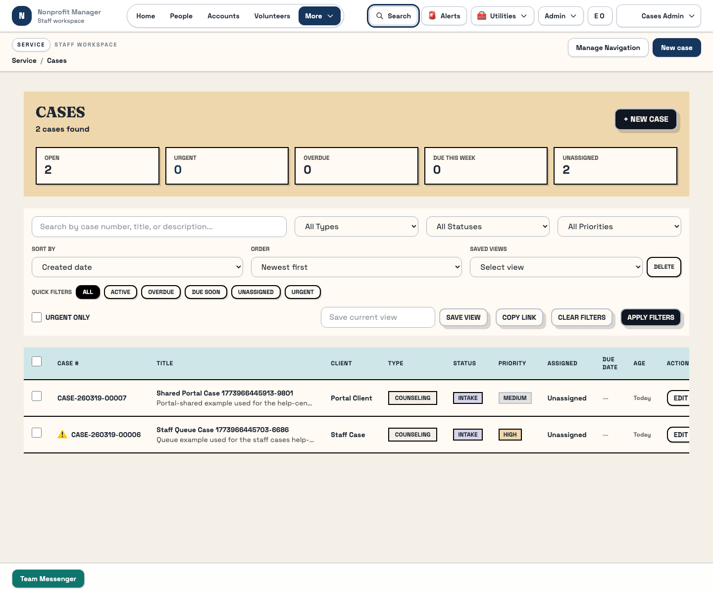
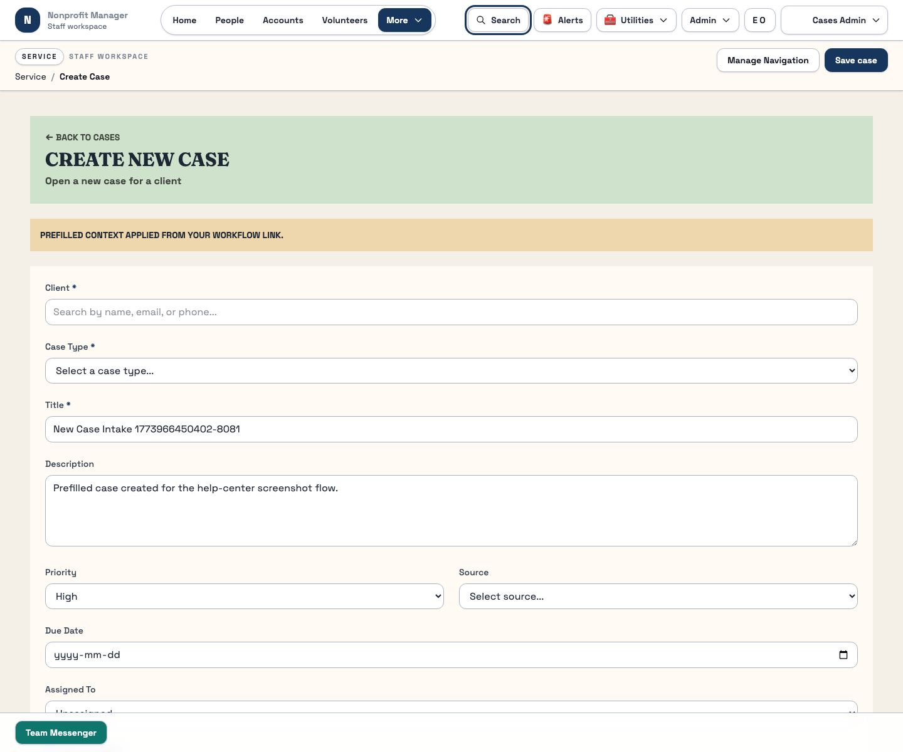
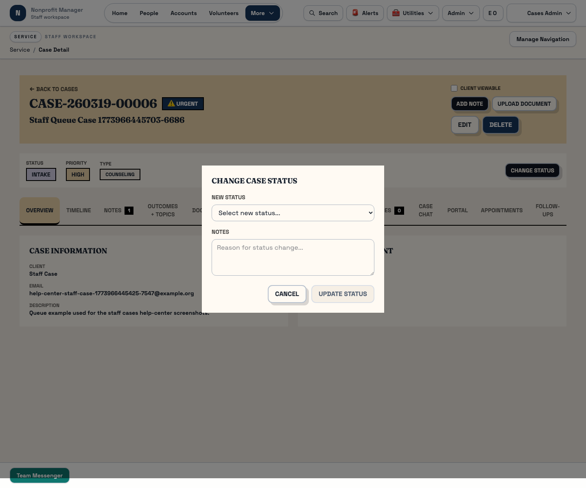

Cases
Work the case queue from intake to portal sharing
Use this guide when you need to find a case, create a new one, update the record, and decide when the client should see it in the portal.
What this page is for
Use this guide to work a case from the staff queue. It covers filtering the list, opening or creating a case, recording updates, and deciding when the case should be shared with a portal client.
Before you start
- Sign in with a staff account that can view the cases queue.
- Know whether you are starting from an existing contact or from a new intake.
- Confirm the case type, title, and priority before you create a new record.
- Keep the portal workflow in mind if the client should eventually see the case.
Steps
- Start from the Cases list. Open Cases and narrow the queue with search, type, status, priority, quick filters, or saved views.
- Create a case when you do not already have one. Use + New Case to open the intake form. If you launched from a contact or link, confirm the prefilled banner and check that the contact details are correct.
- Review the case detail before you update anything. Check the case number, status, priority, tabs, and client viewable setting so you know which parts of the record are shared.
- Add notes or change status when the work moves forward. Use Change Status to move the case through the workflow, and include the notes and outcomes that the modal asks for.
- Use the tabs for the rest of the work. Notes, Timeline, Documents, Milestones, Services, Relationships, Follow-ups, Case Chat, Appointments, and Portal each hold a different part of the case record.
- Share the case with the portal only when it is ready. Turn on Client Viewable when the client should see the case, then confirm the portal-side workflow matches what you expect.



Before you mark a case client viewable, confirm that the contact, title, and status are correct. Once the portal can see the case, staff and clients will both treat it as the current record.
What happens next
After you save the case or change its status, the updated record becomes part of the working queue. If you shared it with the portal, the client view will reflect the same case workspace and any visible updates you added.
Common mistakes
- Creating a case before confirming the correct contact or case type.
- Updating status without writing the notes that explain the change.
- Marking a case client viewable before the record is ready to be shared.
- Looking in the wrong tab when the update actually lives in Notes, Documents, or Portal.
Related guides
Need help?
If a case looks wrong, capture the case number, the filters you used, the tab you were on, and whether the case should be visible in the portal. That usually tells staff whether the issue is data, permissions, or process.